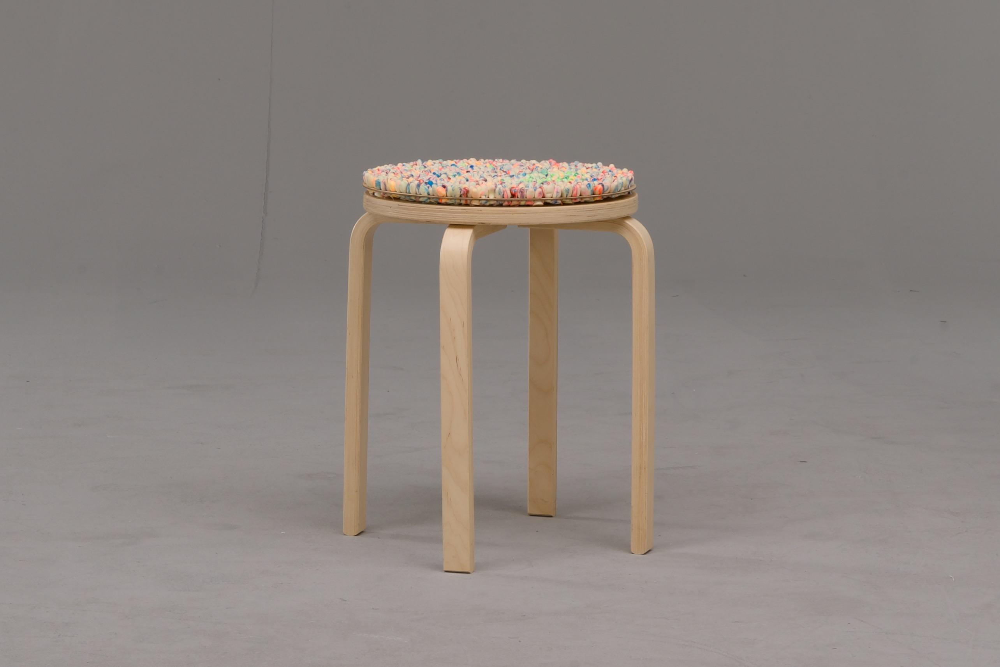
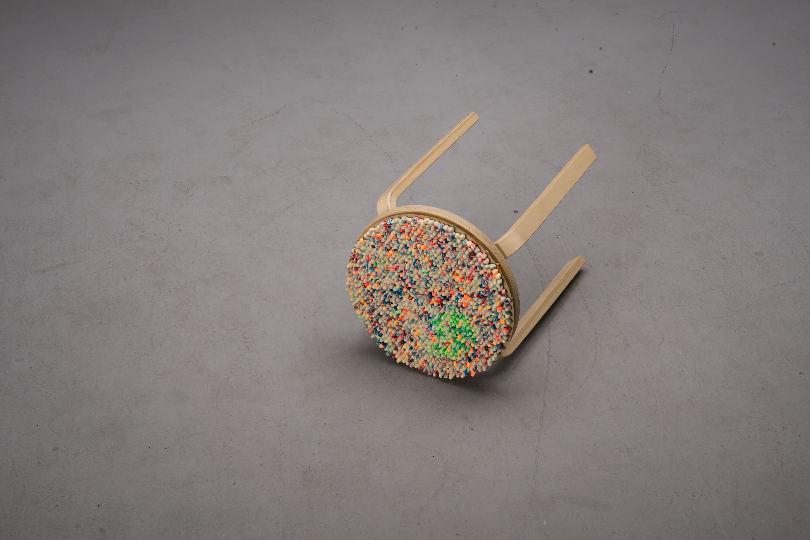

Moltitudine
reuse of earcups production waste

"Moltitudine" is a material exploration project developed for the Design and Materials course during the 2024/2025 Winter Semester under the supervision of Prof. Aart Van Bezojien. I followed a material-driven methodology to find practical uses for pre-consumer waste, specifically single-use foam earcups discarded during production quality control processes. I explored the unique mechanical properties of this waste materials: softness, shape-memory behavior, toughness, and supposedly sound absorption capabilities.

I started tracking down where the waste come from by tracking down the company that produce them. I found out that pre consumer waste of earcups materials comes out from the quality control of the machine that makes them.


The Output
As an output I decided to create a surface made out of the foam cups. The surface can empowers users to "hack" and upgrade existing objects, a concept I applied through the creation of a soft and colorful cushion for a standard IKEA stool.

To maximize sustainability and ensure easy end-of-life disassembly, I stucked the earcups in matrix made out of Kraftplex. This stiff, paper-based material dissolves in water, allowing the base to be easily separated from the foam cups for future recycling.
